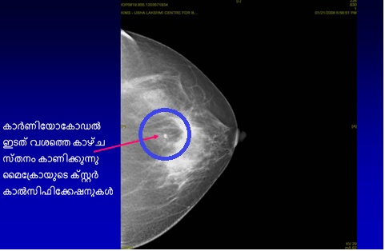
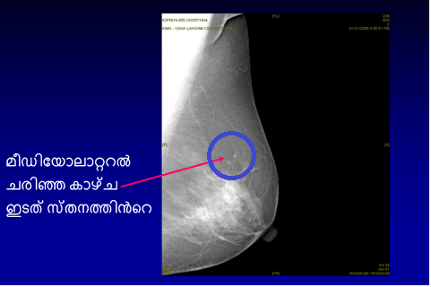

എന്താണ് മാമ്മോഗ്രാം?
സ്തനത്തില് ഒരു മുഴ/സമീപകാലത്ത് സ്തനത്തില് ഒരു വ്യത്യാസം ശ്രദ്ധിച്ചിട്ടുള്ളവരിലാണ് മാമ്മോഗ്രാം(സ്തനത്തിന്റെര എക്സ്റേ) ചെയ്യുന്നത്. ഒരു സ്പെഷ്യലിസ്റ്റിന്റെല ക്ലിനിക്കല് സ്തന പരിശോധനയും, മാമ്മോഗ്രാമും സ്തനത്തിന്റെത അള്ട്രുസൗണ്ടും ഒരുമിച്ച് ചെയ്യുന്നത് സ്തനത്തിലെ പ്രശ്നം കണ്ടെത്താന്/തടയാന് സഹായിക്കും.
ഡോക്ടര്...എനിക്ക് സ്തനത്തില് മുഴയുള്ളതായി അനുഭവപ്പെടുന്നില്ല. പിന്നെ എന്തിനാണ് ഞാന് മാമ്മോഗ്രാം ചെയ്യുന്നത്?
എന്താണ് സ്ക്രീനിങ്ങ് മാമ്മോഗ്രാം?
സ്തനത്തില് മുഴ ഉള്ളതായി സ്ത്രീക്കോ ഡോക്ടര്ക്കോന തിരിച്ചറിയാനാവാത്ത അതിസൂക്ഷമമായ ഘട്ടത്തില് സ്തനാര്ബുാദം കണ്ടെത്തുന്നതിനായാണ് ഒരു മാമ്മോഗ്രാം (സ്തനത്തിന്റെട എക്സ് റേ) ഉപയോഗിക്കുന്നത്. 40 വയസ്സ് മുതല് വര്ഷുത്തില് ഒരു തവണ സ്ക്രീനിങ്ങ് മാമ്മോഗ്രാം ഉപയോഗിക്കണമെന്നാണ് നിര്ദ്ദേ ശിക്കുന്നത്.
ഒരു മാമ്മോഗ്രാഫി (സ്തനത്തിന്റെി എക്സ് റേ)വഴി സ്തനം പരിശോധിക്കുന്നത് സ്തനാര്ബുനദം കാണപ്പെട്ട് തുടങ്ങുന്നതിന് നിരവധി വര്ഷുങ്ങള്ക്ക്േ മുമ്പ് തന്നെ കണ്ടെത്തുന്നതിന് ഫലപ്രദമാണ് എന്ന് തെളിയിക്കപ്പെട്ടിട്ടുള്ള മാര്ഗ്ഗ മാണ്. സ്തനാര്ബുമദം നേരത്തെ കണ്ടെത്തുന്നത് വിജയകരമായ ചികിത്സ സാധ്യമാക്കും. അത് വലിയ തോതിലുള്ള മികച്ച രോഗമുക്തി സാധ്യമാക്കും.




സ്തനാര്ബുമദ പരിശോധന എല്ലാ പ്രായത്തിലുള്ളവരിലും ഫലപ്രദമാണോ?
എല്ലാ പ്രായത്തിലുള്ള സ്ത്രീകളും സ്തനങ്ങളെ സംബന്ധിച്ച് അവബോധമുള്ളവരായിരിക്കണമെങ്കിലും, സ്തനപരിശോധന 40 വയസ്സിന് മുകളിലുള്ളവരില് മാത്രമാണ് ഫലപ്രദമാകുക. ലക്ഷണങ്ങളില്ലാത്ത 40 വയസ്സില് താഴെയുള്ളവരിലെ പതിവായുള്ള സ്തന പരിശോധന ഫലപ്രദമാണെന്ന് ഇനിയും തെളിയിക്കപ്പെട്ടിട്ടില്ല.
മാമ്മോഗ്രാം ചെയ്യുന്നത് സുരക്ഷിതമാണോ? ഇത് റേഡിയേഷന് മൂലമുള്ള പ്രശ്നങ്ങള് ഉണ്ടാക്കുമോ?
മാമ്മോഗ്രാം ചെയ്യുന്നത് തികച്ചും സുരക്ഷിതമാണ്. മാമ്മോഗ്രാഫി റേഡിയേഷന്റൊ കുറഞ്ഞ അളവ് ഉള്പ്പെ്ടുന്നതാണ് – ഇതില് നിന്ന് ആരോഗ്യത്തിനുള്ള ഭീഷണി വളരെ കുറവാണ്. മാമ്മോഗ്രാഫിയില് നല്കപപ്പെടുന്ന റേഡിയേഷന്റെി അളവ് ഡെന്റോല് എക്സ് റേയില് നല്കുുന്നതിന് സമാനമാണ്.
മാമ്മോഗ്രാഫി വേദനാജനകമാണോ?
മാമ്മോഗ്രാഫി താല്ക്കാ ലികമായ അസ്വസ്ഥത ഉണ്ടാക്കാമെങ്കിലും, ശരിയായി പരിശീലനം ലഭിച്ച ഒരു റേഡിയോഗ്രാഫര് ചെയ്താല് ഇത് വേദനാജനകമായിരിക്കില്ല. ഡിജിറ്റല് മാമ്മോഗ്രാഫിയില് അസ്വസ്ഥത വളരെ കുറവാണ്.
കണ്വെകന്ഷാണല് മാമ്മോഗ്രാമും ഡിജിറ്റല് മാമ്മോഗ്രാമും തമ്മിലുള്ള വ്യത്യാസം എന്താണ്?
ഫുള് ഫീല്ഡ് ഡിജിറ്റല് മാമ്മോഗ്രാഫി വിപ്ലവകരമായ ഒരു കണ്ടെത്തലാണ്. അതില് സ്തനത്തിന്റെന ഒരു ചിത്രം അഞ്ച് സെക്കന്ഡു്കള്ക്കു ള്ളില് സൃഷ്ടിക്കാനാവും (പരമ്പരാഗത മാമ്മോഗ്രാമുമായി താരതമ്യപ്പെടുത്തുമ്പോള് ഇതിന് നാലു മുതല് അഞ്ച് മിനിറ്റ് എടുക്കും). ഈ പുതിയ സാങ്കേതികവിദ്യ സ്റ്റാന്ഡേരര്ഡ്ത മാമ്മോഗ്രാഫിയേക്കാള് ഏറെ ഫലപ്രദമാണ്. നേരത്തെയുള്ള സൂക്ഷ്മമായ സ്തനാര്ബുസദ മാറ്റങ്ങള് ഇതില് കാണിക്കും. കടുപ്പമുള്ള സ്തനങ്ങളുള്ള ചെറുപ്പക്കാരായ സ്ത്രീകളില് ഉപയോഗപ്രദമാണ്. പരമ്പരാഗത മാമ്മോഗ്രാഫിയുമായി താരതമ്യപ്പെടുത്തുമ്പോള് കുറഞ്ഞ അസ്വസ്ഥതകളും അവഗണിക്കാവുന്ന റേഡിയേഷന് സമ്പര്ക്കരവും, മുകളില് കാണിച്ചിരിക്കുന്നത് പോലുള്ള ഉയര്ന്നഅ കൃത്യതയുമാണ് ഇതിന്റെേ മറ്റ് ഗുണങ്ങള്.
കൂടാതെ, ടെലിമെഡിസിന് സൗകര്യങ്ങള് ലഭ്യമായതോടെ, ഒരു രണ്ടാം അഭിപ്രായത്തിനായി ലോകമെങ്ങും ഡിജിറ്റല് ഇമേജുകള് അയക്കാനാവും. മെഷീന് വളരെ വിലയേറിയതായതിനാല്, ഫുള് ഫീല്ഡ് ഡിജിറ്റല് മാമ്മോഗ്രാഫി ഇന്ത്യയില് വ്യാപകമായി ലഭ്യമല്ല.
സ്തനാര്ബു്ദം കണ്ടെത്തുന്നതില് മാമ്മോഗ്രാഫി 100% കൃത്യതയുള്ളതാണോ?
സ്തനാര്ബുകദം നേരത്തെ തന്നെ കണ്ടെത്തുന്നതിനുള്ള ഏറെ ഫലപ്രദമായ മാര്ഗ്ഗ മാണ് മാമ്മോഗ്രാമുകള്. മറ്റ് സ്ക്രീനിങ്ങ് ടെസ്റ്റുകള് പോലെ അത് പൂര്ണ്ണ തയുള്ളതല്ല. മാമ്മോഗ്രാഫിയുടെ കൃത്യത 85% ആണ്. അതിനുള്ള കാരണങ്ങള് ഇനി പറയുന്നവയാണ്:
സ്തനത്തിന്റെ) എംആര്ഐായുടെ പങ്ക് എന്താണ്?
സ്തനത്തിന്റെവ എംആര്ഐപ പതിവായുള്ള സ്തന പരിശോധനക്ക് അല്ലെങ്കില് സ്തനാര്ബുംദമുള്ള ഓരോ രോഗിയുടെയും വിലയിരുത്തലിന് ശുപാര്ശ ചെയ്യുന്നില്ല.
എന്നിരുന്നാലും ഇത് ചില പ്രത്യേക സാഹചര്യങ്ങളില് തികച്ചും ഉപകാരപ്രദമാണ്: